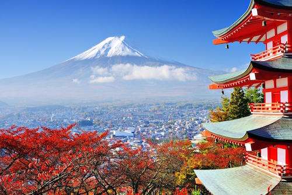
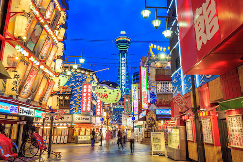
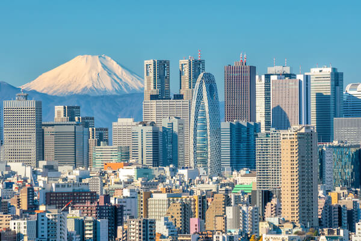

Where to go in Japan

The highest mountain in Japan is Mount Fuji, a dormant (sleeping) volcano. Mount Fuji is 3,776 metres/ 12,388 feet high.

visit Dotonbori, the main entertainment district and the aquarium or go on tour in the Universal Studios.

Visit the Imperial Palace and gardens or have fun at Disneyland Tokyo.